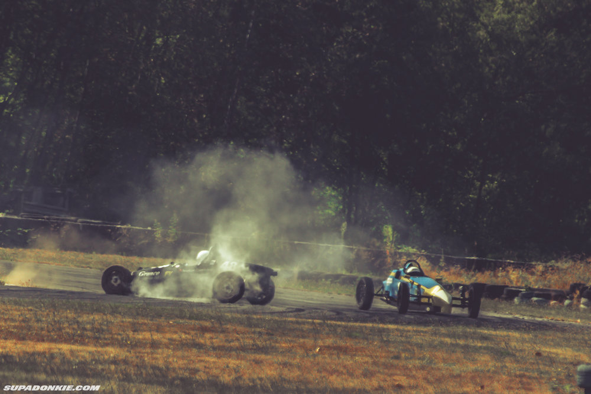

So I drove out to Mission Raceway bright and early this Saturday for one sole purpose: To photograph a bunch of old vintage cars. Vintage Race Cars. :o
Participants hail from mostly around the Pacific North West, with a couple others from Alberta and California. Race class consists of Vintage Closed Wheel, Vintage Formula Ford Invitational, and Formula Vee.
I absolutely love taking paddock photos of static race cars, and capturing the work put into keeping these machines running. I think it's as important as shooting the action itself on track.


